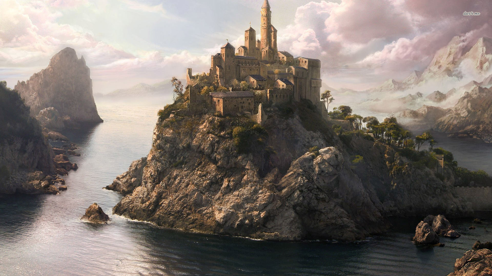

Government
Commune - Yamashan is state of Rabbits that work together in harmony and without strife. The Constitution of Yamashan has provisions for universal direct suffrage, no restrictions on voting, the rights to work, care in old age and sickness, housing, education, and cultural understanding. The land is governed by a special commission located in Usagi Town composed of 5 members from each major city region and 1 chairman/General Secretary, Phoseph Talin. Phoseph, was a young rabbit when the Bolphevik Revolution occured in 950 AT lead by Vladimir Phenin the founder of the state of Yamashan. When Phenin passed in 980 AT, now in his prime Talin became the General Secretary.
Under Talin rule, the central tenet of Yamashan became "Socialism in One Country", uniting the previously automous city regions under a central government out of Usagi Town. These city regions would elect 5 members to attend the 5 moon planning sessions. These new centralization allowed for Phenin to launch a controlled period of rapid industrialization and collectivization in Yamashan cause huge growth in indrustry, massive increase in crop yields, and large economic improvement. With the surplus in goods, trading with the Moles of Haiwan and Mice of Hojo dramatically increased allowing for much economic prosperity and varities of goods in Yamashan.
Terrain
Yamashan is seems to have longer winters then the rest of the continent, often with snow in early summer and late fall. This in turns leads to the land being more clear of underbrush with many high tall trees that can survive the harsh conditions. This in turn brings more birds to the area but less insects and other ground dwelling animals.
Common Wildlife
Rabbits - Much more stoat then their Mole and mice cousins, Rabbits can take a beating. They can also jump far and fast, making them rather hard to catch. They use their speed and quick movement to surround or escape their enemies.
Owls
Hawks
Snow Birds
Geese
Tree Dwelling Insects
Areas of Note
Usagi Town - The Federal City. Under Phenin's and Talin's new federal socialist governement, Usagi Town became the capital city of Yamashan. With the large ammount of federial aid, Usagi Town became the major political, economic, cultural, and scientific center of Yamashan. It also became the largest city on the continent, with many outside races coming to live and trade with the thriving rabbits. Although these other races don't recieve the benefits that the rabbits get from the Yamashan government, they still eak out an average livings and live peacefully and safely in the cities walls.
Usagi Town is built into a large, hollow mountain with seven peaks. In the center tallest peak, the government is housed and is ran there. The center peak has the highest standard of living often better than that of nobles of other lands and foreign dignataries are often housed here as well. The next three peaks that are the same height house the military, industry communes and farming communes. The three smallest peaks house none dignatary foriegners, unemployed commoners, and a food storage district.
Turtle Bluff - The land of the Turles. Turtle Bluff is the seafaring trading that has the majority of its trade with the Mice of Hojo. It is located on a pensala that happens to be an atractive spot for turtles to bask in. In return for protection from land preditors, the turles actively defend ships arround turtle bay from pirates.
The Bulganin family of Rabits is generally elected into power here. The Bulganin's are black rabbits that welcome in goods from other countries and try to compete economically with Usagi Town.
Toredo - The Mountain Post. Toredo has become a major trading stopping point on the way to Usagi Town. Under Tenin's military plan, it is the last line of defense before foreign invaders from the south reach Usagi Town.
Toredo has been built into the side of the nearby Ural Mountains, and is a crossroads on two major roads that lead into Usagi town. As such, trade from both the sea and Moles are present here.
The Voznesensky family of Rabbits tend to be elected here. They are rather larger, more fierce rabbits that have known to be agressive when they find things that could further boast their military power. They have also been known to covent shinny things to the dismay of the citizens and often tax more then recommended by the Yamashan government.
Tokki Tokki - The Seaport of the East. Tokki Tokki is also built into the side of the Ural Mountains. It does not see much land trade, except that which is returning from Usagi Town to bring goods to the Moles by sea. As such, it is the major trading seaport with the Moles to the south. Often, many mechanical things tend to enter the city and are bought by the rabbits of Xingyun before they can reach Usagi Town.
The Rykov family of rabbits live here and are often elected. They are brownish of medium stature by have white ears. Often called white hats, Rykov mice are known for over promoting sea exploration instead of trading and are known to spend a pretty penny on goods from unknown cultures.

Xingyun - The Carrot farms of Yamashan. Xingyun is known for the large farms of carrots that are produced here. Other than that, the town is known for the research it does into various types of food magic, such as cheese magic. They import special food from all across the continent in attempts to figure out the best recipes.
The Simbirsk family of rabbits live here and are often elected. They are white, have extra long ears and their tails are much much more puffy then normal. They are also extremely fat as they tend to eat and promote the food products the city produces.
Hopsville - The brewery of Yamashan. Hopsville is mostly isolated from trade of other empires, but the rabbits here dont care. They spend most of their time brewing various beers of different strength, and then tasting them. The good ones they keep for their city while the poorer ones they ship to Usagi Town to sell.
The Nevskoe Family lives here and are often elected. The Nevskoe family are skinny brown rabbits with large legs and arms to lift barrels of beer. They are often drunk and carefree but are quick to anger and forgiveness. Much of their intrest is in different, exotic grains to use to create the perfect beer.
Other Regions
Home